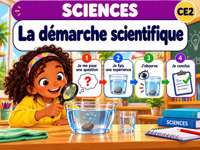
La démarche scientifique
Sciences · Méthode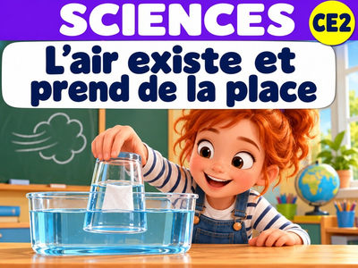
L’air existe et prend de la place
Sciences · Matière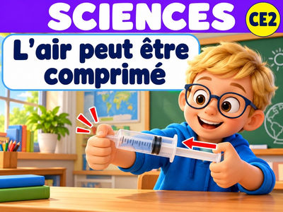
L’air peut être comprimé
Sciences · Matière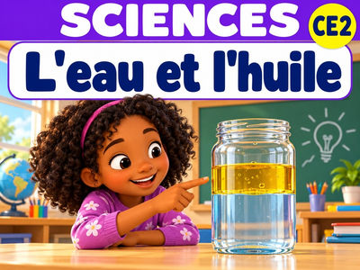
L’eau et l’huile ne se mélangent pas
Sciences · Matière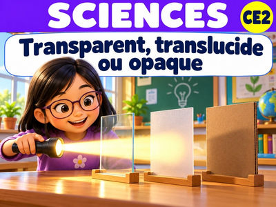
Transparent, translucide ou opaque ?
Sciences · MatièreComment se forme une ombre ?
Sciences · Matière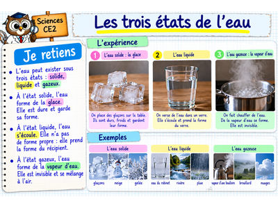
Les trois états de l’eau
Sciences · Matière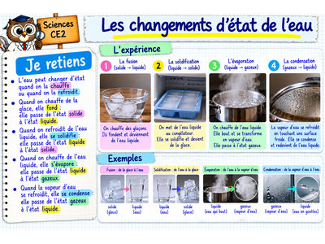
Les changements d’état de l’eau
Sciences · Matière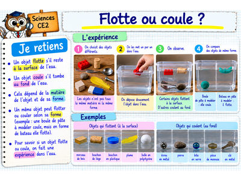
Flotte ou coule ?
Sciences · Matière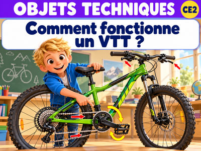
Comment fonctionne un VTT ?
Sciences · Objets techniquesLe VTT : rouler en sécurité
Sciences · Objets techniques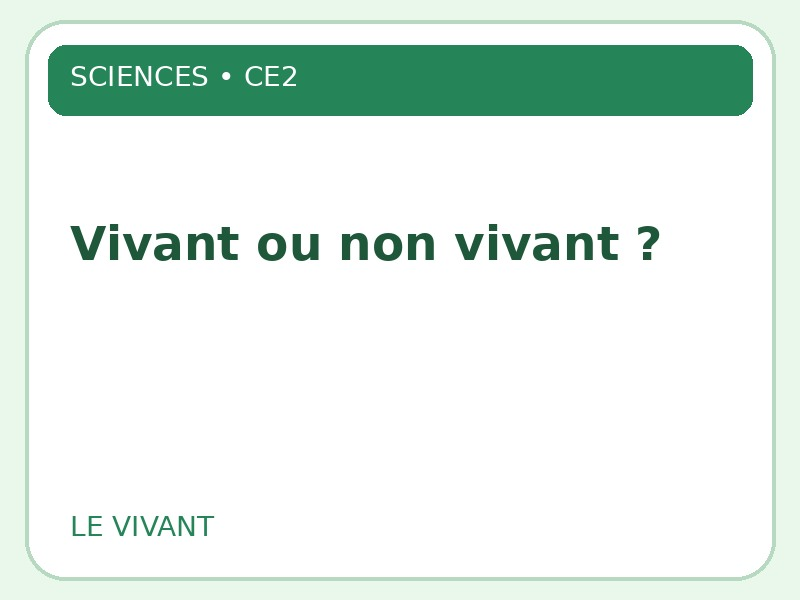
Vivant ou non vivant ?
Sciences · Vivant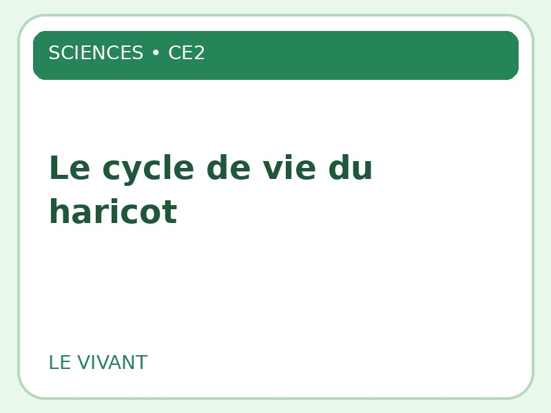
Le cycle de vie du haricot
Sciences · Vivant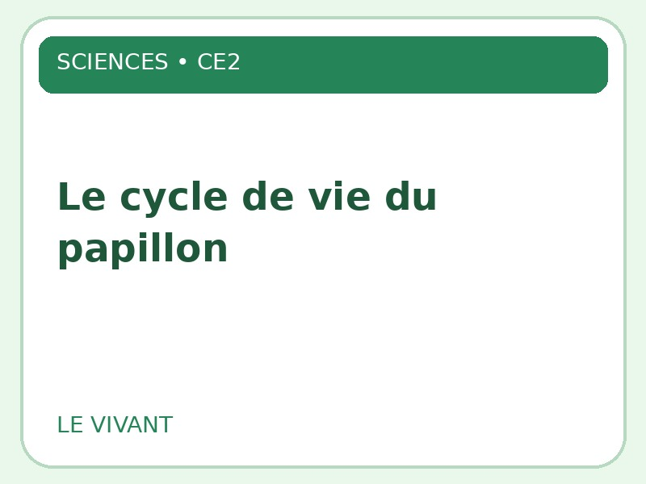
Le cycle de vie du papillon
Sciences · Vivant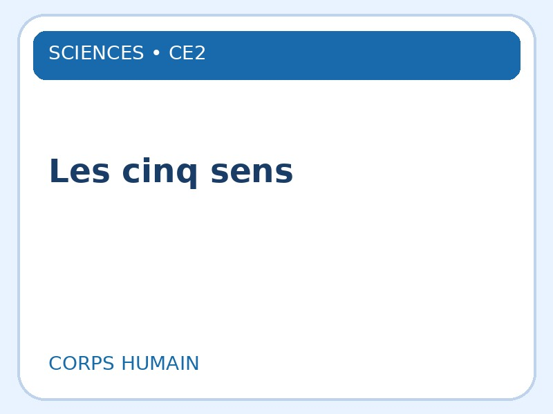
Les cinq sens
Sciences · Corps humain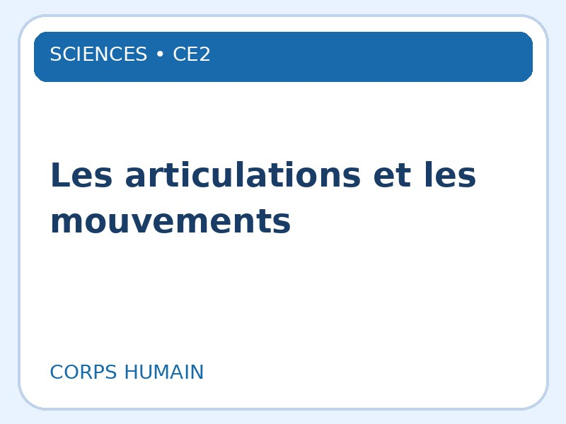
Les articulations et les mouvements
Sciences · Corps humain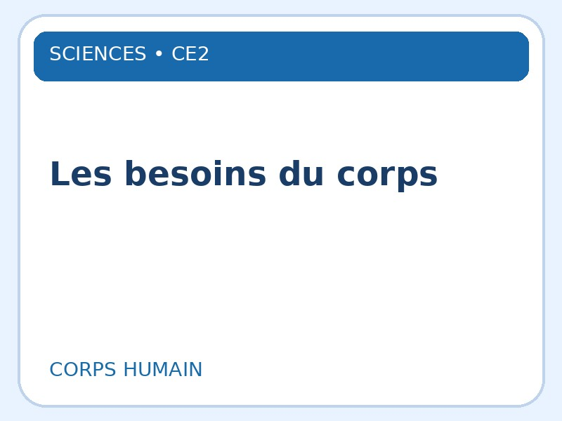
Les besoins du corps
Sciences · Corps humainAucune leçon publiée dans cette sous-matière pour le moment.